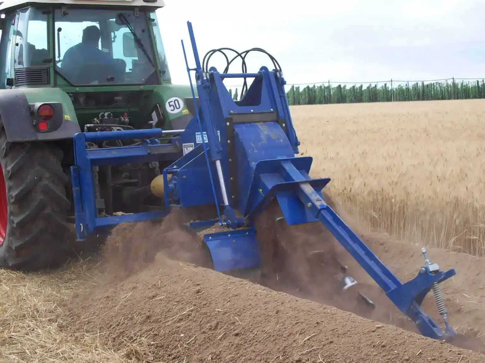
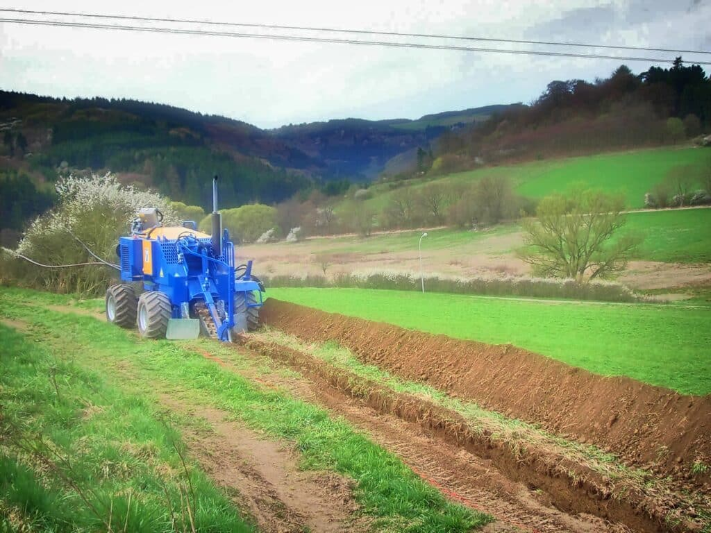
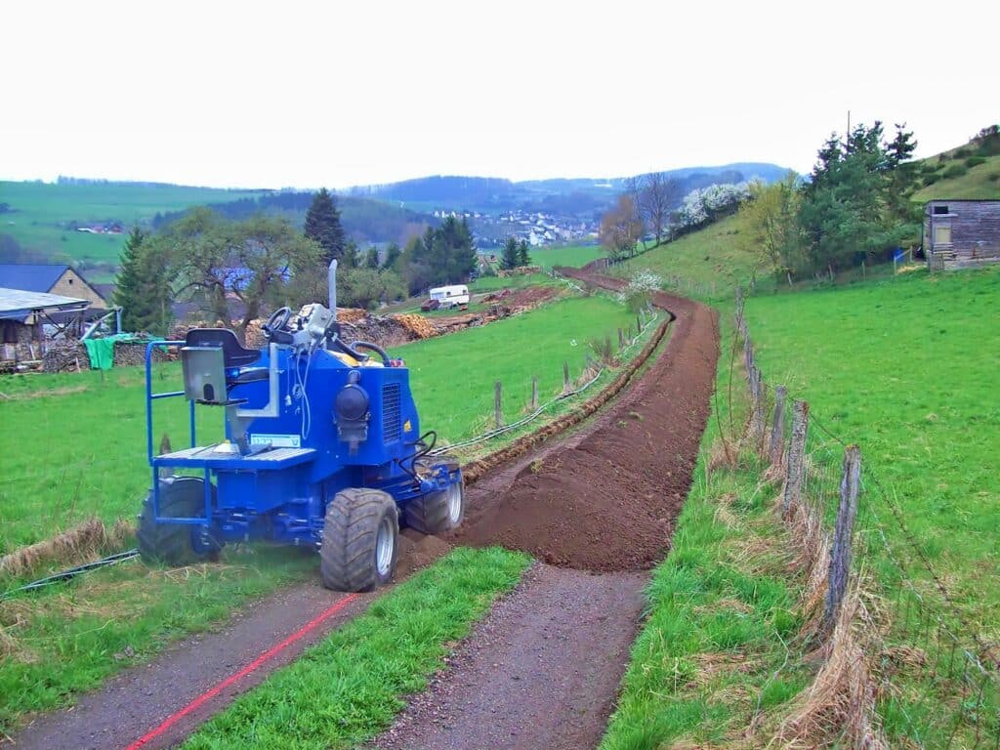
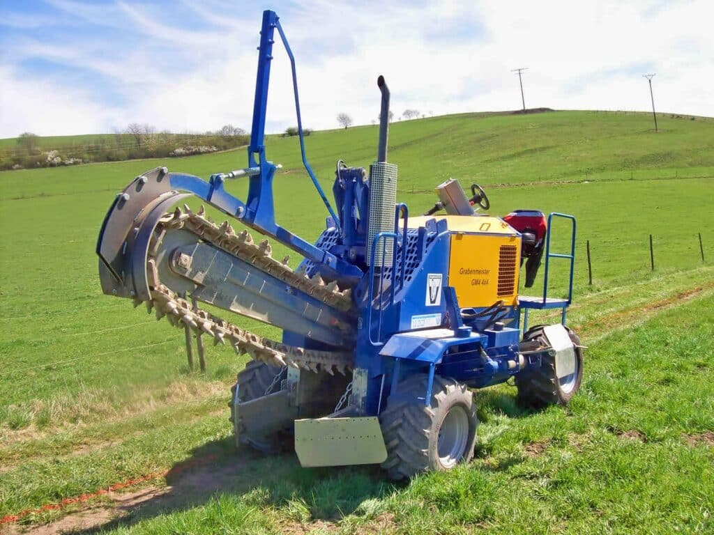
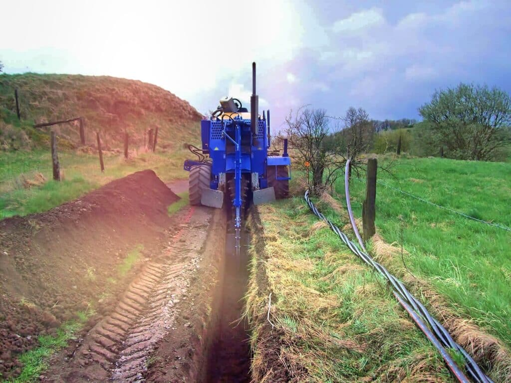
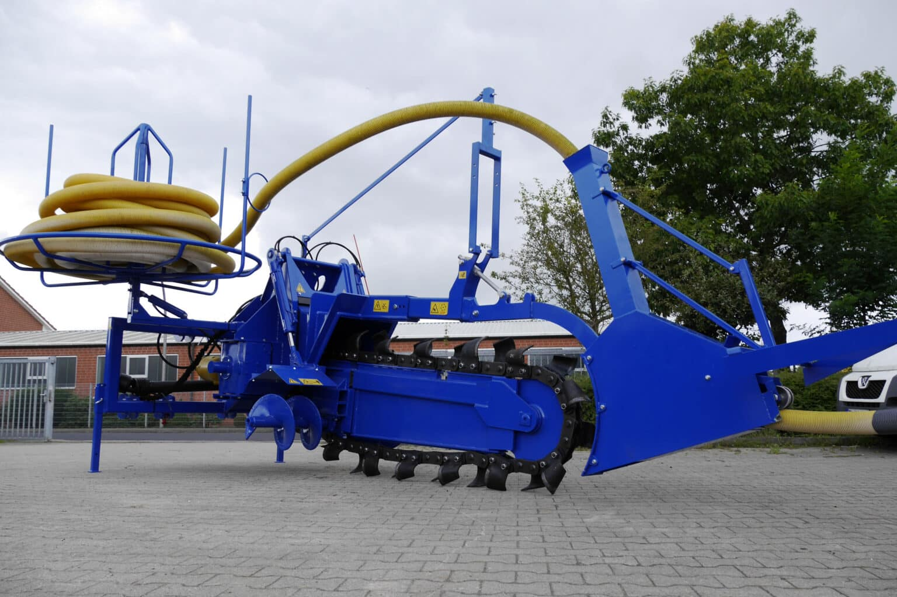

Wir fräsen, wo
andere graben.
Seit über fünfzig Jahren entwickelt und fertigt LIBA Grabenfräsen, Anbaufräsen und Spezialmaschinen für den Tief-, Leitungs- und Glasfaserbau. Robust. Präzise. Made in Germany.
Eine Familienmanufaktur.
Eine globale Referenz.
Seit 1969 entwickelt LIBA Grabenfräsen, die unter härtesten Bedingungen liefern. Was im Emsland mit einer Idee begann, ist heute eine weltweit eingesetzte Maschinenfamilie für Tiefbau, Versorgung und Infrastruktur.
-
01
Eigene Fertigung in Lingen (Ems)Konstruktion, Schweißbau, Hydraulik-Integration und Endmontage unter einem Dach.
-
02
Über 40 MaschinenmodelleAnbaufräsen, Selbstfahrer, Pflüge und Spezialmaschinen — abgestimmt auf jedes Trägergerät.
-
03
Direkter WerkskontaktKein Anrufcenter, kein Zwischenhändler. Persönliche Ansprechpartner vom Erstkontakt bis zur Auslieferung.
-
04
Lebensdauer statt LebenszyklusMaschinen, die nach Jahrzehnten noch im Einsatz sind — und mit Originalersatzteilen aus dem Werk weiterlaufen.
 GM 180 AF · Schlepperanbau
GM 180 AF · Schlepperanbau
Die richtige Maschine
für jeden Untergrund.
Vom kompakten Schlepperanbau bis zur selbstfahrenden Felsfräse — fünf Produktfamilien, ein gemeinsames Ziel: Effizienz im Graben.
Alle MaschinenEine Technologie.
Dutzende Anwendungen.
Vom Glasfaserausbau bis zur Bewässerung im Weinberg — überall dort, wo präzise Gräben unter wirtschaftlichen Bedingungen entstehen müssen, liefert LIBA die passende Lösung.
Alle Anwendungen
Glasfaserausbau
Schmale Gräben, hohe Tagesleistung, präzise Geometrie — wirtschaftlich überlegen.

Pipeline & Rohrleitungen
Gas, Wasser, Fernwärme. Definierte Grabengeometrie für sichere Trassen.

Strom- & Solartrassen
Erdkabel-Verlegung für Solarparks, Windparks und Mittelspannungsnetze.

Sportplatzbau & Drainage
Saubere Drainagegräben mit minimaler Rasennarben-Schädigung.

Landwirtschaft & Bewässerung
Bewässerungs- und Drainagelösungen für effiziente Bewirtschaftung.

Tief- & Spezialbau
Bergbau, Felsen, Gleisbau — wo Bagger an Grenzen kommen, beginnt LIBA.
Eine LIBA-Fräse ist kein Werkzeug. Sie ist eine Investition in jeden Meter, den Sie unter dem Boden ehrlich verdient haben.
Vier Schritte.
Eine LIBA-Maschine.
Vom Konstruktionsplan bis zur Auslieferung — jede Maschine entsteht in unserer eigenen Manufaktur in Lingen (Ems). Nichts wird zugekauft, was wir besser selbst machen können.
Konstruktion
Jede Maschine wird gemeinsam mit dem Kunden auf Bodenart, Trägergerät und Einsatzprofil hin spezifiziert.
Schweißbau
Hochfeste Stahlrahmen und Tragstrukturen — eigene Schweißerei mit erfahrenen Konstruktionsmeistern.
Hydraulik & Mechanik
Integration von Antrieb, Steuerung, Bestückung. Originalkomponenten von Markenherstellern.
Abnahme & Auslieferung
Funktionsprüfung im Werk, persönliche Übergabe und Bedienereinweisung beim Kunden vor Ort.
Technik, die
man sieht.
Welche Fräse passt
zu Ihrem Projekt?
Erzählen Sie uns von Ihrem Vorhaben — Bodenart, Trägergerät, Grabentiefe. Innerhalb von 24 Stunden erhalten Sie eine technische Einschätzung direkt vom LIBA-Werk in Lingen.
- Telefon
- +49 (0) 591 76 314
- info@lingener-baumaschinen.de
- Werk
- Diekstrasse 59 · 49809 Lingen (Ems)